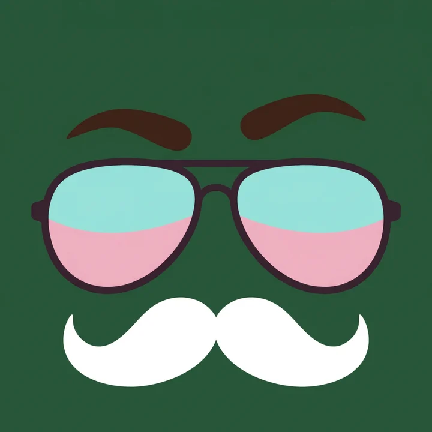
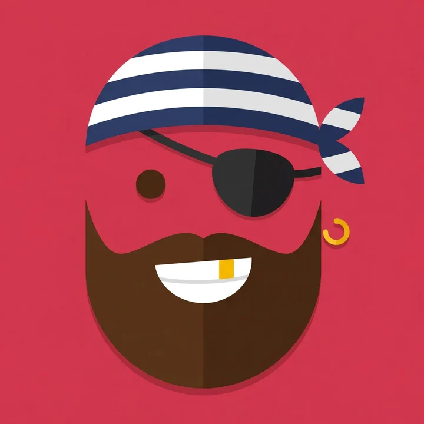

Avatars en grand
Les trois dessins retouchés, en entier, tels qu'ils sont livrés (un carré, sans contour). La forme ronde ou arrondie et le contour actif viennent ensuite de l'interface : Rond ou carré arrondi →



Les trois dessins retouchés, en entier, tels qu'ils sont livrés (un carré, sans contour). La forme ronde ou arrondie et le contour actif viennent ensuite de l'interface : Rond ou carré arrondi →

